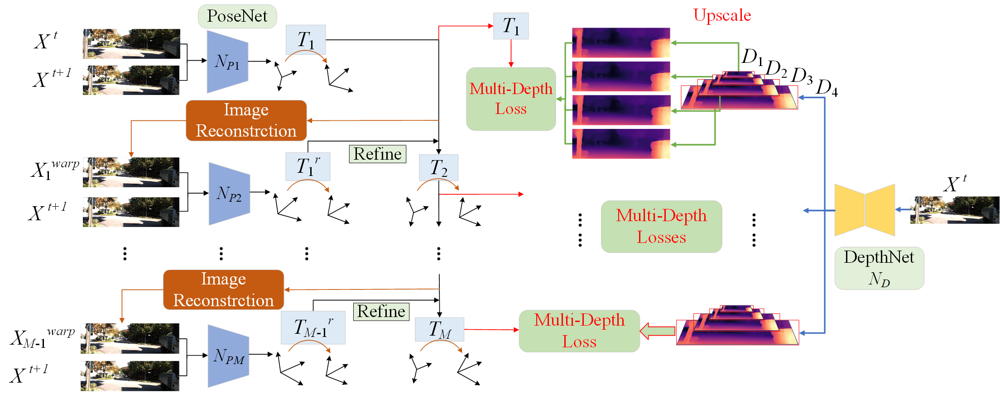

|
I am a Postdoctoral Research Associate of the Department of Engineering at the University of Cambridge advised by Prof. Brian Sheil. I obtain my Ph.D. degree in the Intelligent Robotics and Machine Vision (IRMV) Lab at the Shanghai Jiao Tong University advised by Prof. Hesheng Wang. I have a lot of collaborations with Prof. Masayoshi Tomizuka from UC Berkeley. I spent a happy time as a visiting researcher in the Computer Vision and Geometry Group (CVG), ETH Zurich, advised by Prof. Marc Pollefeys. I am an Associate Editor (AE) for RAL, ICRA2024, 2025, 2026, and IROS2024, 2025. I was awarded the DAAD AI and Robotics fellow. I obtained twice Scholarships for Doctoral Students (Top 1% in Shanghai Jiao Tong University). My doctoral thesis received the Excellent Doctoral Dissertation Award from Shanghai Jiao Tong University (15 recipients university-wide annually, the only one in Department of Automation)! Most of my co-mentored undergraduates have gone to UC Berkeley, Princeton, HKU, Columbia, Gatech, UCSD, UCLA, TUM, SJTU and so on. Some of them got full scholarships for direct PhD students. Welcome to contact me to come to the University of Cambridge for a visiting student or remote collaboration! |
|
My area of focus is on developing robust robot perception, localization, mapping methods, enabling intelligent understanding of the real world while ensuring safety and efficiency. These keywords, intelligence, safety, and efficiency, make the research technology widely and practically applicable in areas such as autonomous mobile robots, robot manipulation, and digital twin construction. My long-term vision is to achieve full understanding and utilization of real-world scenes by robots in terms of geometry, semantics, concepts, and logic, enabling AI robots to closely collaborate with humans. My research interests include robot perception, localization, mapping, planning, and construction automation based on deep learning/reinforcement learning, specifically on topics such as:
|
[2025.09.11] I am invited to give a presentation related to Real2Sim2Real on Cambridge Computer Vision Workshop! The slides. [2025.09.11] I will serve as Associate Editor (AE) for the top robotics conference ICRA 2026! [2025.07.02] One first-author survey paper on NeRF in robotics is accepted by top journal IJRR 2025 (IF=5.200)! [2025.06.28] One first-author paper on 2D-3D Registration is published by top journal T-TRO 2025 (IF=10.500)! [2025.02.26] One first-author paper on LiDAR odometry and 3D scene flow is published by top journal T-ITS 2025 (IF=9.551)! [2025.02.13] One corresponding-author paper on General Gaussian Mapping for various modalities is published by top journal T-ASE 2025 (IF=5.999)! [2025.01.28] I wil serve as Associate Editor (AE) for the top robotics conference IROS 2025! [2024.01.27] One paper (PhD student ranks first co-directed by me) on dynamic Neural SLAM and one paper (undergraduate student ranks first co-directed by me) on Real2Sim2Real Robotic Manipulation Learning are accepted by top Robotics conference ICRA 2025! [2024.09.25] One co-first-author (PhD student ranks first co-directed by me) paper on LiDAR Point Cloud Semantic Segmentation is accepted by top AI conference NIPS 2024! [2024.09.16] I wil serve as Associate Editor (AE) for the top robotics conference ICRA 2025! [2024.07.24] I start serving on the IEEE Robotics and Automation Letters (RA-L) Editorial Board as Associate Editor in the area Visual Perception and Learning! [2024.07.01] One third-author (PhD student and master student rank first and second co-directed by me) paper on large-scale road surface reconstruction based on explicit mesh and implicit encoding is accepted by top computer vision conference ECCV 2024! [2024.06.30] One co-first-author (master student ranks first co-directed by me) paper on Deep Sequence LiDAR Odometry is accepted by top Robotics conference IROS 2024! [2024.06.14] I organize a workshop “3D Reconstruction Technology and Applications” with colleagues at University of Cambridge on July 7, 2024. Welcome to registrate and participate! ---- show more ---- |
|
We create this survey to provide a comprehensive understanding of NeRF in the field of robotics. By exploring the advantages and limitations of NeRF, as well as its current applications and future potential, we hope to shed light on this promising area of research. |
 |
we present I2PNet, a novel end-to-end 2D-3D registration network. I2PNet directly registers the raw 3D point cloud with the 2D RGB image using differential modules with a unique target. The 2D-3D cost volume module for differential 2D-3D association is proposed to bridge feature extraction and pose regression. The results demonstrate that I2PNet outperforms the SOTA by a large margin. |
We propose a novel unsupervised learning method of scene flow with LiDAR odometry, which enables the scene flow network can be trained directly on real-world LiDAR data without scene flow labels. |
We propose RL-GSBridge, a novel real-to-sim-to-real framework which incorporates 3D Gaussian Splatting into the conventional RL simulation pipeline, enabling zero-shot sim-to-real transfer for vision-based deep reinforcement learning. |
To avoid quantized information loss, in this paper, we propose a novel spherical frustum structure, which preserves all points projected onto the same 2D position. Additionally, a hash-based representation is proposed for memory-efficient spherical frustum storage. |
 |
We propose a semantic SLAM system utilizing neural implicit representation to achieve high-quality dense semantic mapping and robust tracking. In this system, we integrate appearance, geometry, and semantic features through cross-attention for feature collaboration. |
 |
We propose a 3D scene flow pseudo-auto-labelling framework. Given point clouds and initial bounding boxes, both global and local motion parameters are iteratively optimized. Diverse motion patterns are augmented by randomly adjusting these motion parameters, thereby creating a diverse and realistic set of motion labels for the training of 3D scene flow estimation models. |
 |
To achieve the robust scene flow estimation, we proposed a novel uncertainty-aware scene flow estimation network with the diffusion probabilistic model. Iterative diffusion-based refinement is designed to enhance the correlation robustness and resilience to challenging cases, e.g. dynamics, noisy inputs, repetitive patterns, etc. |
We propose an end-to-end efficient point cloud registration method of 100,000 level point clouds. |
We propose an efficient and high-precision scene flow learning method for large-scale point clouds, achieving the efficiency of the 2D method and the high accuracy of the 3D method. |
We model the RANSAC sampling consensus as a reinforcement learning process, achieving a full end-to-end learning sampling consensus robust estimation. |
 |
We introduce a method of learning challenging sparse-reward tasks utilizing existing controllers. Compared to previous works of learning from demonstrations, our method improves sample efficiency by orders of magnitude and can learn online safely. |
We propose a new efficient 3D point cloud learning method, which is specially designed for the frame-by-frame processing task of real-time perception and localization of robots. It can accelerate the deep LiDAR odometry of our previous CVPR to real-time while improving the accuracy. |
 |
We introduce a novel flow embedding layer with all-to-all mechanism and reverse verification mechanism. Besides, we investigate and compare several design choices in key components of the 3D scene flow network and achieve SOTA performance. |
 |
We introduce a novel 3D point cloud learning model for deep LiDAR odometry, named PWCLO-Net, using hierarchical embedding mask optimization. It outperforms all recent learning-based methods and the geometry-based approach, LOAM with mapping optimization, on most sequences of the KITTI odometry dataset. |
We propose an efficient feature fusion framework with projection awareness for 3D Object Detection. |
We propose an interactive feature fusion between multi-scale features of images and point clouds. Besides, we explore the effectiveness of pre-training on each single modality and fine-tuning the fusion-based model. |
 |
We propose a new joint learning method for 3D object detection and 3D multi-object tracking based on 3D scene flow. |
 |
We propose a novel context-aware set conv layer to cope with repetitive patterns in the learning of 3D scene flow. We also propose an explicit residual flow learning structure in the residual flow refinement layer to cope with long-distance movement. |
 |
We propose a novel unsupervised training framework of depth and pose with 3D hierarchical refinement and augmentation using explicit 3D geometry. |
 |
We propose Fusion-Net, an online and end-to-end solution that can automatically detect and correct the extrinsic calibration matrix between LiDAR and a monocular RGB camera without any specially designed targets or environments. |
We utilize the generative adversarial networks (GAN) to self-learn 3D scene flow without ground truth. |
 |
We present a framework to realize the unsupervised learning of scene flow from a monocular camera. |
 |
We introduce an Anchor-based Spatial-Temporal Attention Convolution operation (ASTAConv) to process dynamic 3D point cloud sequences. It makes better use of the structured information within the local region and learns spatial-temporal embedding features from dynamic 3D point cloud sequences. |
 |
We introduce a novel hierarchical neural network with double attention for learning the correlation of point features in adjacent frames and refining scene flow from coarse to fine layer by layer. It has a new, more-for-less hierarchical architecture. The proposed network achieves the state-of-the-art performance of 3D scene flow estimation on the FlyingThings3D and KITTI Scene Flow 2015 datasets. |
 |
We introduce a novel unsupervised learning method of optical flow by considering the constraints in non-occlusion regions with geometry analysis. |
We introduce a novel unsupervised learning method of the 3D human pose by considering the loop constraints from real/virtual bones and the joint motion constraints in consecutive frames. |
 |
We introduce a spherical interpolated convolution operator to replace the traditional grid-shaped 3D convolution operator. It improves the accuracy and reduces the parameters of the network. |
 |
We propose a method to explicitly handle occlusion, propose the less-than-mean mask, the maximum normalization, and the consistency of depth-pose and optical flow in the occlusion regions. |
 |
We propose a new unsupervised learning method of depth and ego motion using multiple masks to handle the occlusion problem. |
Associate Editor (AE) for the IEEE Robotics and Automation Letters (RA-L, IF=4.6) Editorial Board in the area Visual Perception and Learning Associate Editor (AE) for the Conference Editorial Board (CEB) of the IEEE Robotics and Automation Society for International Conference on Robotics and Automation (ICRA) 2024, 2025 Associate Editor (AE) for the Conference Editorial Board (CEB) of the IEEE Robotics and Automation Society for International Conference on Intelligent Robots and Systems (IROS) 2024, 2025 Organizer of Workshop “3D Reconstruction Technology and Applications” at University of Cambridge IEEE Member IEEE Robotics and Automation Society Member IEEE Young Professionals Member Reviewer for journals: Nature, IEEE Transactions on Pattern Analysis and Machine Intelligence (T-PAMI), International Journal of Computer Vision (IJCV), IEEE Transactions on Image Processing (T-IP), IEEE Transactions on Intelligent Transportation Systems (T-ITS), IEEE Transactions on Cybernetics (T-cyb), IEEE Transactions on Systems, Man and Cybernetics: Systems (T-SMC), IEEE Transactions on Neural Networks and Learning Systems (T-NNLS), Transactions on Intelligent Transportation Systems (T-ITS), IEEE/ASME Transactions on Mechatronics (T-Mech), IEEE Transactions on Circuits and Systems for Video Technology (T-CSVT), IEEE Transactions on Medical Imaging (T-MI), IEEE Transactions on Automation Science and Engineering (T-ASE), IEEE Transactions on Industrial Informatics (T-II), IEEE Transactions on Industrial Electronics (T-IE), IEEE Transactions on Intelligent Vehicles (T-IV), IEEE Transactions on Vehicular Technology (T-VT), IEEE Transactions on Broadcasting (T-BC), IEEE Transactions on Cognitive and Developmental Systems (T-CDS), IEEE Transactions on Artificial Intelligence (T-AI), IEEE Transactions on Emerging Topics in Computational Intelligence (T-ETCI), IEEE Transactions on Medical Robotics and Bionics (T-MRB), IEEE Robotics and Automation Letters (RAL), Pattern Recognition (PR), Machine Intelligence Research (MIR). Reviewer for conferences: IEEE Conference on Computer Vision and Pattern Recognition (CVPR), IEEE International Conference on Computer Vision (ICCV), European Conference on Computer Vision (ECCV), AAAI Conference on Artificial Intelligence (AAAI), International Conference on Robotics and Automation (ICRA), International Conference on Intelligent Robots and Systems (IROS), European Conference on Mobile Robots (ECMR). |
[2024.12] Conference Poster on “Spherical Frustum Sparse Convolution Network for LiDAR Point Cloud Semantic Segmentation,” at NIPS 2024 in Vancouver, Canada, December 10-15, 2024. [2024.7] Conference Poster on “Dense 3D Neural Map Reconstruction Only Using a Low-cost LiDAR,” at I3CE 2024 in Pittsburgh, Pennsylvania, USA, July 28-31, 2024. [2023.10] Conference Poster on “DELFlow: Dense Efficient Learning of Scene Flow for Large-Scale Point Clouds,” at ICCV 2023 in Paris, France, October 2-6, 2023. [2023.05] Conference Poster on “Self-supervised Multi-frame Monocular Depth Estimation with Pseudo-LiDAR Pose Enhancement,” at ICRA 2023 in ExCeL London UK, 29 May–2 June 2023. [2023.02] Conference Poster on “TransLO: A Window-based Masked Point Transformer Framework for Large-scale LiDAR Odometry,” at AAAI 2023 in Washington DC, USA, February 7-14, 2023. [2022.10] Conference Poster on “What Matters for 3D Scene Flow Network,” at ECCV 2022 in Tel Aviv, Israel, October 23-27, 2022. [2022.08] Zhidx Open Talk on “3D Scene Flow and Lidar Point Cloud Odometry in Autonomous Driving”, Online. [2021.06] Conference Talk on “FusionNet: Coarse-to-Fine Extrinsic Calibration Network of LiDAR and Camera with Hierarchical Point-pixel Fusion” at ICRA 2022 in May 23-27, 2022 (Online Talk, the conference is held in Philadelphia (PA), USA). [2021.06] Conference Poster on “PWCLO-Net: Deep LiDAR Odometry in 3D Point Clouds Using Hierarchical Embedding Mask Optimization” at CVPR 2021 in CVPR Virtual, June 19-25, 2021. [2021.05] Conference Talk on “Unsupervised Learning of Scene Flow from Monocular Camera” at ICRA 2021 in Xi’an, China, 30 May - 5 June, 2021. [2020.10] Invited Talk on “Unsupervised Learning of Depth, Optical Flow and Pose with Occlusion From 3D Geometry” at the First International Forum on 3D Optical Sensing and Applications (iFOSA 2020) held in Being, China, October 17-18, 2020. [2019.07] Seminar Talk on “Unsupervised Learning of Monocular Depth and Ego-Motion Using Multiple Masks” at Sino-European Engineering Education Platform (SEEEP) Doctoral Summer School in Instituto Superior Técnico (IST), Lisbon, Portugal, July 22-25, 2019. [2019.05] Conference Poster on “Unsupervised Learning of Monocular Depth and Ego-Motion Using Multiple Masks” at ICRA 2019 in Montreal, Canada, May 20-24, 2019. |
[2025.03] Guest Lecturer for Part II ER: Extended Reality at the University of Cambridge. (Invited by Dr. Fangcheng Zhong) [2024.11] Guest Lecturer for CS345/912 Sensor Networks and Mobile Data Communications at the University of Warwick. (Invited by Prof. Yu Guan) [2024.11] Guest Lecturer for IOTA5201 Reinforcement Learning for Intelligent Decision Making in CyberPhysical Systems at Hong Kong University of Science and Technology.(Invited by Dr. Jiadong Yu) [2024.09-present] Supervisor for undergraduates in Downing College, at the University of Cambridge. [2024.09-2024.12] Supervisor for undergraduates in Clare College, at the University of Cambridge. [2024.09-present] Teaching Assistant, Demonstrator for IB Integrated Coursework A2 for undergraduates in University of Cambridge. [2024.04-2024.12] Teaching Assistant for the Twin Systems (Digital Twins) Teaching Module at the University of Cambridge (Assistant in designing the course and slides). [2023.10] Lecture on academic career planning for Shanghai Jiao Tong University's "Academic Navigation" training program for MPhil students and PhD students, Autumn 2023. [2023.03-06] Teaching Assistant (Project Supervisor of Masters), 3D Vision in ETH, Spring 2023. [2022.10] delivered a cutting-edge lecture on the topic of “Learning-Based Robot Perception and Localization” in the Lectures on Frontier Academics in China University of Mining and Technology, Autumn 2022. |
Past Masters:
Past Undergrad Interns:
|
|
In my free time, I like reading books on psychology and literature. I like travelling. I also enjoy sports and meditation. |
Last update: 2025.10. Thanks for Jon Barron's website. |